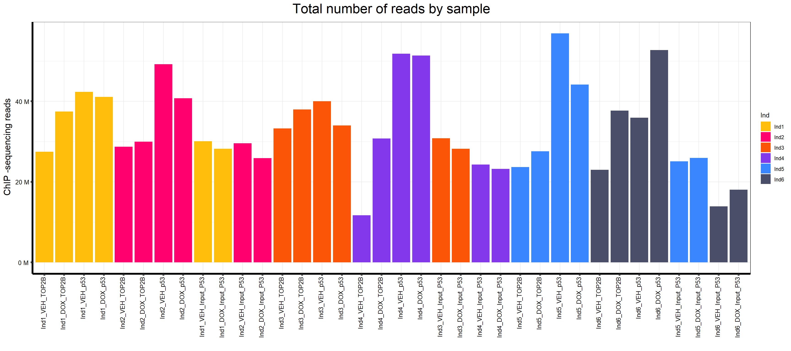
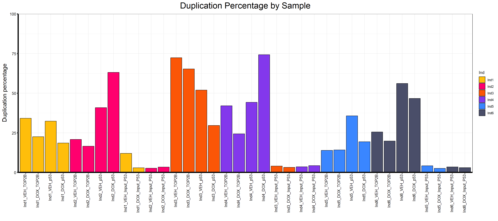
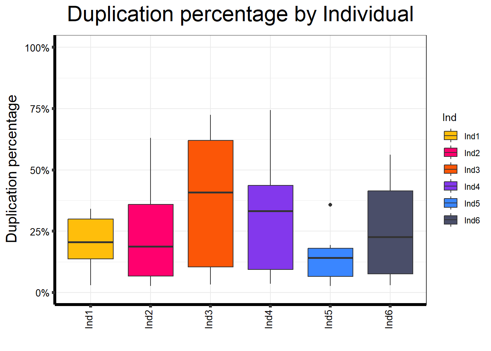
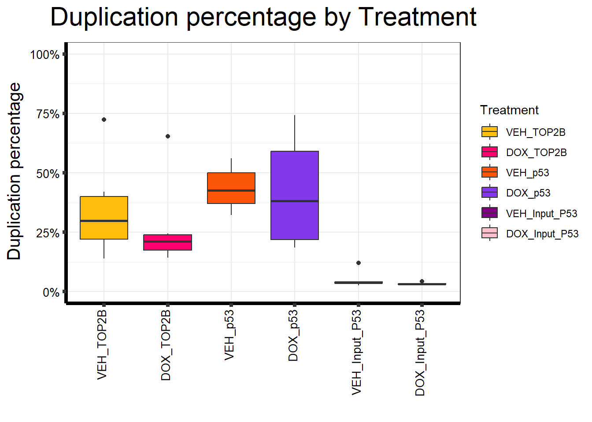
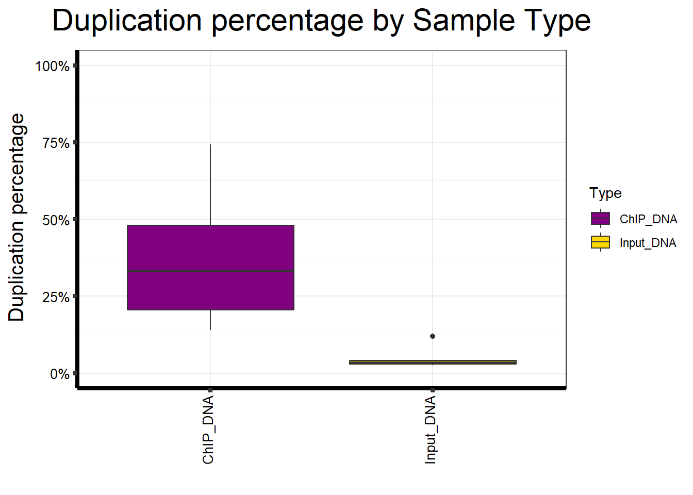
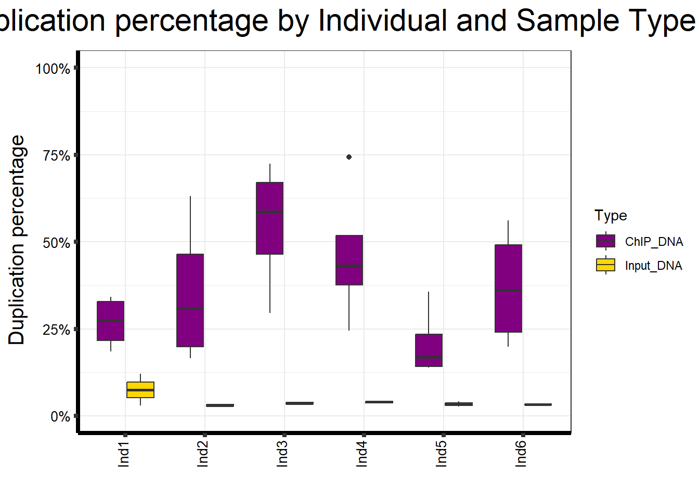

Total Reads and Mapped Reads (TOP2B and P53)
Last updated: 2025-08-15
Checks: 6 1
Knit directory: ChIPSeq_project/
This reproducible R Markdown analysis was created with workflowr (version 1.7.1). The Checks tab describes the reproducibility checks that were applied when the results were created. The Past versions tab lists the development history.
The R Markdown is untracked by Git. To know which version of the R
Markdown file created these results, you’ll want to first commit it to
the Git repo. If you’re still working on the analysis, you can ignore
this warning. When you’re finished, you can run
wflow_publish to commit the R Markdown file and build the
HTML.
Great job! The global environment was empty. Objects defined in the global environment can affect the analysis in your R Markdown file in unknown ways. For reproduciblity it’s best to always run the code in an empty environment.
The command set.seed(20250815) was run prior to running
the code in the R Markdown file. Setting a seed ensures that any results
that rely on randomness, e.g. subsampling or permutations, are
reproducible.
Great job! Recording the operating system, R version, and package versions is critical for reproducibility.
Nice! There were no cached chunks for this analysis, so you can be confident that you successfully produced the results during this run.
Great job! Using relative paths to the files within your workflowr project makes it easier to run your code on other machines.
Great! You are using Git for version control. Tracking code development and connecting the code version to the results is critical for reproducibility.
The results in this page were generated with repository version d0f4698. See the Past versions tab to see a history of the changes made to the R Markdown and HTML files.
Note that you need to be careful to ensure that all relevant files for
the analysis have been committed to Git prior to generating the results
(you can use wflow_publish or
wflow_git_commit). workflowr only checks the R Markdown
file, but you know if there are other scripts or data files that it
depends on. Below is the status of the Git repository when the results
were generated:
Ignored files:
Ignored: .Rproj.user/
Ignored: analysis/figure/
Untracked files:
Untracked: analysis/Total_Reads_and_Mapped_Reads.Rmd
Untracked: data/ChIP Seq Summary stat CTCF RAD21.csv
Untracked: data/ChIP Seq Summary stat TOP2B P53.csv
Untracked: plots_reads_comparison/
Note that any generated files, e.g. HTML, png, CSS, etc., are not included in this status report because it is ok for generated content to have uncommitted changes.
There are no past versions. Publish this analysis with
wflow_publish() to start tracking its development.
📌 Total Reads by Sample
Load Required Libraries
# Load necessary R packages
library(edgeR)Warning: package 'edgeR' was built under R version 4.3.2Loading required package: limmaWarning: package 'limma' was built under R version 4.3.1library(limma)
library(RColorBrewer)
library(gridExtra)
library(reshape2)
library(data.table)Warning: package 'data.table' was built under R version 4.3.3
Attaching package: 'data.table'The following objects are masked from 'package:reshape2':
dcast, meltlibrary(tidyverse)Warning: package 'tidyverse' was built under R version 4.3.2Warning: package 'tidyr' was built under R version 4.3.3Warning: package 'readr' was built under R version 4.3.3Warning: package 'purrr' was built under R version 4.3.3Warning: package 'dplyr' was built under R version 4.3.2Warning: package 'stringr' was built under R version 4.3.2Warning: package 'lubridate' was built under R version 4.3.3── Attaching core tidyverse packages ──────────────────────── tidyverse 2.0.0 ──
✔ dplyr 1.1.4 ✔ readr 2.1.5
✔ forcats 1.0.0 ✔ stringr 1.5.1
✔ ggplot2 3.5.2 ✔ tibble 3.2.1
✔ lubridate 1.9.4 ✔ tidyr 1.3.1
✔ purrr 1.0.4 ── Conflicts ────────────────────────────────────────── tidyverse_conflicts() ──
✖ dplyr::between() masks data.table::between()
✖ dplyr::combine() masks gridExtra::combine()
✖ dplyr::filter() masks stats::filter()
✖ dplyr::first() masks data.table::first()
✖ lubridate::hour() masks data.table::hour()
✖ lubridate::isoweek() masks data.table::isoweek()
✖ dplyr::lag() masks stats::lag()
✖ dplyr::last() masks data.table::last()
✖ lubridate::mday() masks data.table::mday()
✖ lubridate::minute() masks data.table::minute()
✖ lubridate::month() masks data.table::month()
✖ lubridate::quarter() masks data.table::quarter()
✖ lubridate::second() masks data.table::second()
✖ purrr::transpose() masks data.table::transpose()
✖ lubridate::wday() masks data.table::wday()
✖ lubridate::week() masks data.table::week()
✖ lubridate::yday() masks data.table::yday()
✖ lubridate::year() masks data.table::year()
ℹ Use the conflicted package (<http://conflicted.r-lib.org/>) to force all conflicts to become errorslibrary(scales)Warning: package 'scales' was built under R version 4.3.2
Attaching package: 'scales'
The following object is masked from 'package:purrr':
discard
The following object is masked from 'package:readr':
col_factorlibrary(biomaRt)Warning: package 'biomaRt' was built under R version 4.3.2library(cowplot)Warning: package 'cowplot' was built under R version 4.3.2
Attaching package: 'cowplot'
The following object is masked from 'package:lubridate':
stamplibrary(ggrepel)Warning: package 'ggrepel' was built under R version 4.3.3library(corrplot)Warning: package 'corrplot' was built under R version 4.3.3corrplot 0.95 loadedlibrary(Hmisc)Warning: package 'Hmisc' was built under R version 4.3.3
Attaching package: 'Hmisc'
The following objects are masked from 'package:dplyr':
src, summarize
The following objects are masked from 'package:base':
format.pval, unitslibrary(ggpubr)Warning: package 'ggpubr' was built under R version 4.3.1
Attaching package: 'ggpubr'
The following object is masked from 'package:cowplot':
get_legend📍 2. Load Data
align<-read.csv("data/ChIP Seq Summary stat TOP2B P53.csv")
map<-data.frame(align)
map$Treatment<- factor(map$Treatment, levels = c("VEH_TOP2B", "DOX_TOP2B", "VEH_p53", "DOX_p53", "VEH_Input_P53", "DOX_Input_P53"))📍 3. Define Color Palettes
drug_palc <- c("#8B006D","#DF707E","#F1B72B", "#3386DD","#707031","#41B333")
Ind_palc <- c("#ffbe0b","#ff006e","#fb5607", "#8338ec","#3a86ff","#4a4e69")
Treat_palc <- c("#ffbe0b","#ff006e","#fb5607", "#8338ec", "#800080","#FFC0CB")
Map_palc <- c("#9b19f5","#e6d800", "#b3d4ff")
Combined_palc <- c("#FF0000","#00FF00","#0000FF","#FFFF00","#FF00FF","#00FFFF","#FFA500","#800080","#FFC0CB","#A52A2A","#808080","#FFD700")
Type_palc <- c("#800080","#FFD700")📍 4. Prepare Data
# Factor Sample_name to maintain order
map$Sample.Det<-factor(map$Sample.Det,levels = map$Sample.Det)📍 5. Plot Total Reads by Sample
map %>%
#mutate(Drug=factor(Drug,levels=c("CX-5461","DOX","VEH"))) %>%
#mutate(Conc.=factor(Conc.,levels=c("0.1","0.5"))) %>%
#mutate(Time=factor(Time,levels=c("3","24","48"))) %>%
#group_by(Drug,Conc.,Time) %>%
ggplot(., aes (x =Sample.Det, y=Total.Reads..before.trimming., fill = Ind))+
geom_col()+
#geom_hline(aes(yintercept=20000000))+
scale_fill_manual(values=Ind_palc)+
scale_y_continuous(labels = label_number(suffix = " M", scale = 1e-6))+
ggtitle(expression("Total number of reads by sample"))+
xlab("")+
ylab(expression("ChIP -sequencing reads"))+
theme_bw()+
theme(plot.title = element_text(size = rel(2), hjust = 0.5),
axis.title = element_text(size = 15, color = "black"),
axis.ticks = element_line(linewidth = 1.5),
axis.line = element_line(linewidth = 1.5),
axis.text.y = element_text(size =10, color = "black", angle = 0, hjust = 0.8, vjust = 0.5),
axis.text.x = element_text(size =10, color = "black", angle = 90, hjust = 1, vjust = 0.2),
#strip.text.x = element_text(size = 15, color = "black", face = "bold"),
strip.text.y = element_text(color = "white"))
📌 Total Reads by Individuals
map %>%
ggplot(aes(x = Ind, y = Total.Reads..before.trimming., fill = Ind)) +
geom_boxplot() +
scale_fill_manual(values = Ind_palc) +
scale_y_continuous(labels = label_number(suffix = " M", scale = 1e-6),
limits = c(0, NA)) +
ggtitle(expression("Total number of reads by Individual")) +
xlab("") +
ylab(expression("ChIP -sequencing reads")) +
theme_bw() +
theme(
plot.title = element_text(size = rel(2), hjust = 0.5),
axis.title = element_text(size = 15, color = "black"),
axis.ticks = element_line(linewidth = 1.5),
axis.line = element_line(linewidth = 1.5),
axis.text.y = element_text(size = 10, color = "black"),
axis.text.x = element_text(size = 10, color = "black", angle = 90,
hjust = 1, vjust = 0.2),
strip.text.y = element_text(color = "white")
)
📌 Total Reads by Treatment
map %>%
ggplot(aes(x = Treatment, y = Total.Reads..before.trimming., fill = Treatment)) +
geom_boxplot() +
scale_fill_manual(values = Treat_palc) +
scale_y_continuous(labels = label_number(suffix = " M", scale = 1e-6),
limits = c(0, NA)) +
ggtitle(expression("Total number of reads by Treatment")) +
xlab("") +
ylab(expression("ChIP -sequencing reads")) +
theme_bw() +
theme(
plot.title = element_text(size = rel(2), hjust = 0.5),
axis.title = element_text(size = 15, color = "black"),
axis.ticks = element_line(linewidth = 1.5),
axis.line = element_line(linewidth = 1.5),
axis.text.y = element_text(size = 10, color = "black"),
axis.text.x = element_text(size = 10, color = "black", angle = 90,
hjust = 1, vjust = 0.2),
strip.text.y = element_text(color = "white")
)
📌 Total Reads by Sample type
map %>%
ggplot(aes(x = Type, y = Total.Reads..before.trimming., fill = Type)) +
geom_boxplot() +
scale_fill_manual(values = Type_palc) +
scale_y_continuous(labels = label_number(suffix = " M", scale = 1e-6),
limits = c(0, NA)) +
ggtitle(expression("Total number of reads by Sample Type")) +
xlab("") +
ylab(expression("ChIP -sequencing reads")) +
theme_bw() +
theme(
plot.title = element_text(size = rel(2), hjust = 0.5),
axis.title = element_text(size = 15, color = "black"),
axis.ticks = element_line(linewidth = 1.5),
axis.line = element_line(linewidth = 1.5),
axis.text.y = element_text(size = 10, color = "black"),
axis.text.x = element_text(size = 10, color = "black", angle = 90,
hjust = 1, vjust = 0.2),
strip.text.y = element_text(color = "white")
)
📌 Total Reads by Individuals and Sample type
map %>%
ggplot(aes(x = Ind, y = Total.Reads..before.trimming., fill = Type)) +
geom_boxplot() +
scale_fill_manual(values = Type_palc) +
scale_y_continuous(labels = label_number(suffix = " M", scale = 1e-6),
limits = c(0, NA)) +
ggtitle(expression("Total number of reads by Individual and Sample Type")) +
xlab("") +
ylab(expression("ChIP -sequencing reads")) +
theme_bw() +
theme(
plot.title = element_text(size = rel(2), hjust = 0.5),
axis.title = element_text(size = 15, color = "black"),
axis.ticks = element_line(linewidth = 1.5),
axis.line = element_line(linewidth = 1.5),
axis.text.y = element_text(size = 10, color = "black"),
axis.text.x = element_text(size = 10, color = "black", angle = 90,
hjust = 1, vjust = 0.2),
strip.text.y = element_text(color = "white")
)
📌 Number of reads before and after trimming
library(dplyr)
library(tidyr)
library(ggplot2)
library(scales)
# Keep sample order as in file
map$Sample.Det <- factor(map$Sample.Det, levels = map$Sample.Det)
# Make sure read counts are numeric (in case CSV parsed as character)
map <- map %>%
mutate(
`Total.Reads..before.trimming.` = as.numeric(`Total.Reads..before.trimming.`),
`Total.reads..after.Trimming.` = as.numeric(`Total.reads..after.Trimming.`)
)
# Compute kept fraction for annotation
map <- map %>%
mutate(kept_frac = `Total.reads..after.Trimming.` / `Total.Reads..before.trimming.`)
# Long format for before vs after
map_long <- map %>%
pivot_longer(
cols = c(`Total.Reads..before.trimming.`, `Total.reads..after.Trimming.`),
names_to = "TrimStage", values_to = "Reads"
) %>%
mutate(
TrimStage = factor(
TrimStage,
levels = c("Total.Reads..before.trimming.", "Total.reads..after.Trimming."),
labels = c("Before trimming", "After trimming")
)
)
# High-contrast (colorblind-safe) colors
stage_colors <- c("Before trimming" = "#1f78b4", # deep blue
"After trimming" = "#ff7f00") # bright orange
# Base plot
p <- ggplot(map_long, aes(x = Sample.Det, y = Reads, fill = TrimStage)) +
geom_col(position = position_dodge(width = 0.8), width = 0.75, color = "black") +
scale_fill_manual(values = stage_colors) +
scale_y_continuous(labels = label_number(suffix = " M", scale = 1e-6)) +
ggtitle(expression("Total number of reads by sample: before vs after trimming")) +
xlab("") +
ylab(expression("ChIP-sequencing reads")) +
theme_bw() +
theme(
plot.title = element_text(size = rel(2), hjust = 0.5),
axis.title = element_text(size = 15, color = "black"),
axis.ticks = element_line(linewidth = 1.5),
axis.line = element_line(linewidth = 1.5),
axis.text.y = element_text(size = 10, color = "black"),
axis.text.x = element_text(size = 10, color = "black", angle = 90, hjust = 1, vjust = 0.2),
legend.title = element_blank()
)
p
📌 Mean Sequencing Reads Before and After Trimming by Individual, Sample Type, and Antibody
library(dplyr)
library(tidyr)
library(ggplot2)
library(scales)
library(stringr)
# --- Prep -------------------------------------------------------------
# Use your existing data frame name: map (change to df if needed)
df <- map
# Ensure required columns exist / are numeric
df <- df %>%
mutate(
`Total.Reads..before.trimming.` = as.numeric(`Total.Reads..before.trimming.`),
`Total.reads..after.Trimming.` = as.numeric(`Total.reads..after.Trimming.`)
)
# Define Tx if your data uses 'Treatment'
if (!"Tx" %in% names(df) && "Treatment" %in% names(df)) {
df <- df %>% mutate(Tx = Treatment)
}
# Normalize factors you care about
df <- df %>%
mutate(
Ab = ifelse(is.na(Ab) | Ab == "", "Input", as.character(Ab)),
Type = factor(Type, levels = c("ChIP_DNA", "Input_DNA")) # adjust if your labels differ
)
# Helper: label function for Y axis (millions)
reads_lab <- label_number(suffix = " M", scale = 1e-6)
# Kept fraction (After / Before)
df <- df %>%
mutate(kept_frac = `Total.reads..after.Trimming.` / `Total.Reads..before.trimming.`)
# --- Group, summarise, pivot -----------------------------------------
group_sum <- df %>%
group_by(Ind, Type, Ab, Tx) %>%
summarise(
before_mean = mean(`Total.Reads..before.trimming.`, na.rm = TRUE),
after_mean = mean(`Total.reads..after.Trimming.`, na.rm = TRUE),
kept_pct = 100 * mean(kept_frac, na.rm = TRUE),
.groups = "drop"
) %>%
pivot_longer(
cols = c(before_mean, after_mean),
names_to = "stage",
values_to = "reads"
) %>%
mutate(
stage = factor(stage, levels = c("before_mean", "after_mean"),
labels = c("Before", "After")),
facet_id = paste0(Ind, "_", Type, "_", Ab)
)
# Order facets by Ind then Type (cleaner viewing)
facet_levels <- group_sum %>%
distinct(Ind, Type, Ab, facet_id) %>%
arrange(Ind, Type, Ab) %>%
pull(facet_id)
group_sum <- group_sum %>%
mutate(facet_id = factor(facet_id, levels = facet_levels))
# Optional: prettier strip labels (multi-line)
strip_labeller <- function(ids) {
parts <- str_split(ids, "_", n = 3, simplify = TRUE)
paste0("Ind: ", parts[,1], "\nType: ", parts[,2], "\nAb: ", parts[,3])
}
# Colors for Before / After
before_after_colors <- c("Before" = "#1f78b4", "After" = "#ff7f00")
# --- Plot -------------------------------------------------------------
p_group <- ggplot(group_sum, aes(x = Tx, y = reads, fill = stage)) +
geom_col(position = position_dodge(width = 0.8), width = 0.7, color = "black") +
scale_fill_manual(values = before_after_colors) +
facet_wrap(~ facet_id, scales = "free_y",
labeller = labeller(facet_id = strip_labeller)) +
scale_y_continuous(labels = reads_lab) +
labs(
x = "Treatment",
y = "Mean reads",
title = "Mean reads by Individual × Sample Type × Antibody"
) +
theme_bw(base_size = 12) +
theme(
legend.title = element_blank(),
plot.title = element_text(hjust = 0.5, face = "bold"),
strip.text = element_text(size = 10)
)
p_group
📌 Duplication percentage by Sample
map %>%
ggplot(aes(x = Sample.Det, y = Duplication.percentage, fill = Ind)) +
geom_col(color = "black") +
scale_fill_manual(values = Ind_palc) +
scale_y_continuous(limits = c(0, 100), expand = c(0, 0)) +
ggtitle(expression("Duplication Percentage by Sample")) +
xlab("") +
ylab(expression("Duplication percentage")) +
theme_bw() +
theme(
plot.title = element_text(size = rel(2), hjust = 0.5),
axis.title = element_text(size = 15, color = "black"),
axis.ticks = element_line(linewidth = 1.5),
axis.line = element_line(linewidth = 1.5),
axis.text.y = element_text(size = 10, color = "black"),
axis.text.x = element_text(size = 10, color = "black", angle = 90,
hjust = 1, vjust = 0.2),
strip.text.y = element_text(color = "white")
)
📌 Duplication percentage by Individual
map %>%
ggplot(aes(x = Ind, y = Duplication.percentage, fill = Ind)) +
geom_boxplot() +
scale_fill_manual(values = Ind_palc) +
scale_y_continuous(limits = c(0, 100), labels = function(x) paste0(x, "%")) +
ggtitle(expression("Duplication percentage by Individual")) +
xlab("") +
ylab(expression("Duplication percentage")) +
theme_bw() +
theme(
plot.title = element_text(size = rel(2), hjust = 0.5),
axis.title = element_text(size = 15, color = "black"),
axis.ticks = element_line(linewidth = 1.5),
axis.line = element_line(linewidth = 1.5),
axis.text.y = element_text(size = 10, color = "black"),
axis.text.x = element_text(size = 10, color = "black", angle = 90,
hjust = 1, vjust = 0.2),
strip.text.y = element_text(color = "white")
)
📌 Duplication percentage by Treatment
map %>%
ggplot(aes(x = Treatment, y = Duplication.percentage, fill = Treatment)) +
geom_boxplot() +
scale_fill_manual(values = Treat_palc) +
scale_y_continuous(limits = c(0, 100), labels = function(x) paste0(x, "%")) +
ggtitle(expression("Duplication percentage by Treatment")) +
xlab("") +
ylab(expression("Duplication percentage")) +
theme_bw() +
theme(
plot.title = element_text(size = rel(2), hjust = 0.5),
axis.title = element_text(size = 15, color = "black"),
axis.ticks = element_line(linewidth = 1.5),
axis.line = element_line(linewidth = 1.5),
axis.text.y = element_text(size = 10, color = "black"),
axis.text.x = element_text(size = 10, color = "black", angle = 90,
hjust = 1, vjust = 0.2),
strip.text.y = element_text(color = "white")
)
📌 Duplication percentage by Sample type
map %>%
ggplot(aes(x = Type, y = Duplication.percentage, fill = Type)) +
geom_boxplot() +
scale_fill_manual(values = Type_palc) +
scale_y_continuous(limits = c(0, 100), labels = function(x) paste0(x, "%")) +
ggtitle(expression("Duplication percentage by Sample Type")) +
xlab("") +
ylab(expression("Duplication percentage")) +
theme_bw() +
theme(
plot.title = element_text(size = rel(2), hjust = 0.5),
axis.title = element_text(size = 15, color = "black"),
axis.ticks = element_line(linewidth = 1.5),
axis.line = element_line(linewidth = 1.5),
axis.text.y = element_text(size = 10, color = "black"),
axis.text.x = element_text(size = 10, color = "black", angle = 90,
hjust = 1, vjust = 0.2),
strip.text.y = element_text(color = "white")
)
📌 Duplication percentage by Individual and Sample type
map %>%
ggplot(aes(x = Ind, y = Duplication.percentage, fill = Type)) +
geom_boxplot() +
scale_fill_manual(values = Type_palc) +
scale_y_continuous(limits = c(0, 100), labels = function(x) paste0(x, "%")) +
ggtitle(expression("Duplication percentage by Individual and Sample Type")) +
xlab("") +
ylab(expression("Duplication percentage")) +
theme_bw() +
theme(
plot.title = element_text(size = rel(2), hjust = 0.5),
axis.title = element_text(size = 15, color = "black"),
axis.ticks = element_line(linewidth = 1.5),
axis.line = element_line(linewidth = 1.5),
axis.text.y = element_text(size = 10, color = "black"),
axis.text.x = element_text(size = 10, color = "black", angle = 90,
hjust = 1, vjust = 0.2),
strip.text.y = element_text(color = "white")
)
sessionInfo()R version 4.3.0 (2023-04-21 ucrt)
Platform: x86_64-w64-mingw32/x64 (64-bit)
Running under: Windows 11 x64 (build 26100)
Matrix products: default
locale:
[1] LC_COLLATE=English_United States.utf8
[2] LC_CTYPE=English_United States.utf8
[3] LC_MONETARY=English_United States.utf8
[4] LC_NUMERIC=C
[5] LC_TIME=English_United States.utf8
time zone: America/Chicago
tzcode source: internal
attached base packages:
[1] stats graphics grDevices utils datasets methods base
other attached packages:
[1] ggpubr_0.6.0 Hmisc_5.2-3 corrplot_0.95 ggrepel_0.9.6
[5] cowplot_1.1.3 biomaRt_2.58.2 scales_1.3.0 lubridate_1.9.4
[9] forcats_1.0.0 stringr_1.5.1 dplyr_1.1.4 purrr_1.0.4
[13] readr_2.1.5 tidyr_1.3.1 tibble_3.2.1 ggplot2_3.5.2
[17] tidyverse_2.0.0 data.table_1.17.0 reshape2_1.4.4 gridExtra_2.3
[21] RColorBrewer_1.1-3 edgeR_4.0.16 limma_3.58.1
loaded via a namespace (and not attached):
[1] DBI_1.2.3 bitops_1.0-9 rlang_1.1.3
[4] magrittr_2.0.3 git2r_0.36.2 compiler_4.3.0
[7] RSQLite_2.3.9 png_0.1-8 vctrs_0.6.5
[10] pkgconfig_2.0.3 crayon_1.5.3 fastmap_1.2.0
[13] backports_1.5.0 dbplyr_2.5.0 XVector_0.42.0
[16] labeling_0.4.3 promises_1.3.2 rmarkdown_2.29
[19] tzdb_0.5.0 bit_4.6.0 xfun_0.52
[22] zlibbioc_1.48.2 cachem_1.1.0 GenomeInfoDb_1.38.8
[25] jsonlite_2.0.0 progress_1.2.3 blob_1.2.4
[28] later_1.3.2 broom_1.0.8 prettyunits_1.2.0
[31] cluster_2.1.8.1 R6_2.6.1 bslib_0.9.0
[34] stringi_1.8.3 car_3.1-3 rpart_4.1.24
[37] jquerylib_0.1.4 Rcpp_1.0.12 knitr_1.50
[40] base64enc_0.1-3 IRanges_2.36.0 httpuv_1.6.15
[43] nnet_7.3-20 timechange_0.3.0 tidyselect_1.2.1
[46] abind_1.4-8 rstudioapi_0.17.1 yaml_2.3.10
[49] curl_6.2.2 lattice_0.22-7 plyr_1.8.9
[52] Biobase_2.62.0 withr_3.0.2 KEGGREST_1.42.0
[55] evaluate_1.0.3 foreign_0.8-90 BiocFileCache_2.10.2
[58] xml2_1.3.8 Biostrings_2.70.3 pillar_1.10.2
[61] filelock_1.0.3 carData_3.0-5 checkmate_2.3.2
[64] stats4_4.3.0 generics_0.1.3 rprojroot_2.0.4
[67] RCurl_1.98-1.17 S4Vectors_0.40.2 hms_1.1.3
[70] munsell_0.5.1 glue_1.7.0 tools_4.3.0
[73] ggsignif_0.6.4 locfit_1.5-9.12 fs_1.6.3
[76] XML_3.99-0.18 grid_4.3.0 AnnotationDbi_1.64.1
[79] colorspace_2.1-0 GenomeInfoDbData_1.2.11 htmlTable_2.4.3
[82] Formula_1.2-5 cli_3.6.1 rappdirs_0.3.3
[85] workflowr_1.7.1 gtable_0.3.6 rstatix_0.7.2
[88] sass_0.4.10 digest_0.6.34 BiocGenerics_0.48.1
[91] farver_2.1.2 htmlwidgets_1.6.4 memoise_2.0.1
[94] htmltools_0.5.8.1 lifecycle_1.0.4 httr_1.4.7
[97] statmod_1.5.0 bit64_4.6.0-1